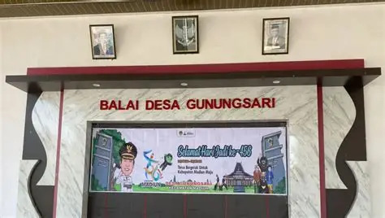
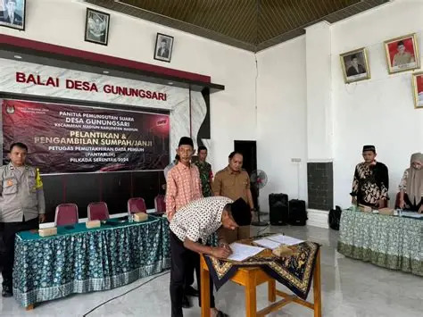
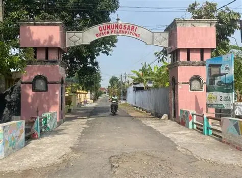
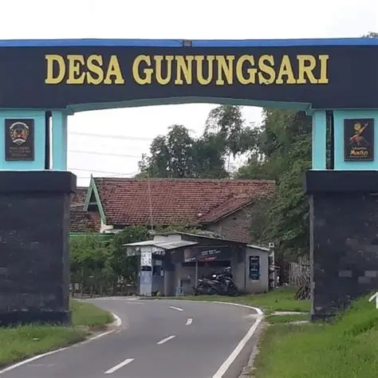
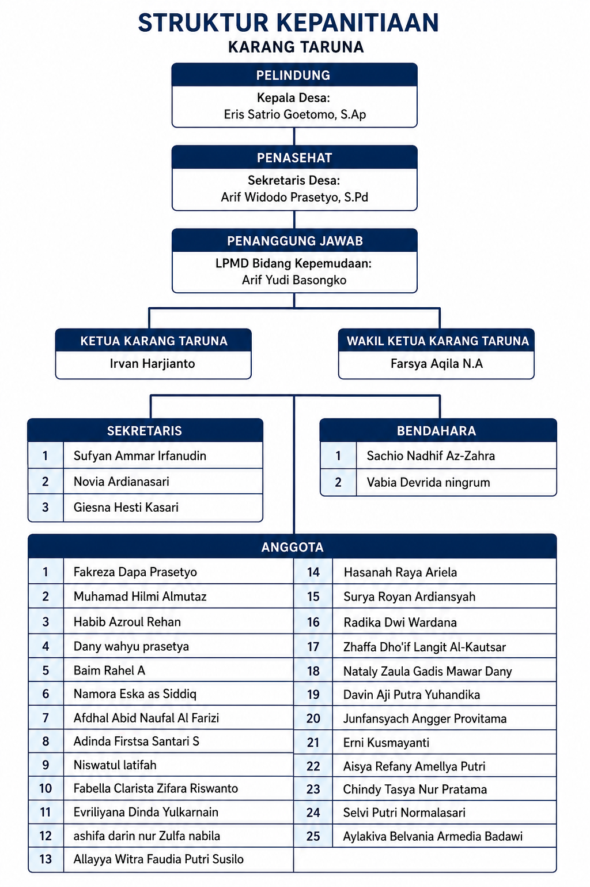

Mandiri
Berani mengembangkan kemampuan dan potensi lokal dengan langkah yang nyata.
Karang Taruna DHARMA ADIKARA menjadi ruang bagi pemuda-pemudi Desa Gunungsari untuk saling menguatkan, mengembangkan potensi, dan mengambil bagian dalam kemajuan desa.
Desa Gunungsari adalah desa wisata berbasis budaya di Kecamatan Madiun, Kabupaten Madiun, Jawa Timur, Indonesia. Keasrian desa terlihat dari lingkungan yang bersih, kehidupan warga yang hangat, dan potensi lokal yang terus dirawat.


Nilai lama menjadi pijakan untuk menciptakan langkah baru.
Desa tumbuh dari masyarakat yang bahu-membahu membangun kawasan pertanian dan kehidupan lokal.
Budaya, gotong royong, dan kepedulian sosial diwariskan dari generasi ke generasi.
Dharma Adikara hadir untuk mengubah potensi kebersamaan menjadi karya yang berdampak.


Bukan hanya kegiatan, tetapi cara untuk hadir bagi desa.
Berani mengembangkan kemampuan dan potensi lokal dengan langkah yang nyata.
Mengolah ide, teknologi, dan budaya menjadi karya yang relevan bagi zaman.
Menjaga solidaritas dan terlibat aktif dalam kehidupan sosial kemasyarakatan.
Mewujudkan pemuda-pemudi Desa Gunungsari yang mandiri, kreatif, berakhlak mulia, serta aktif membangun potensi ekonomi dan sosial kemasyarakatan.
Mengembangkan jiwa kewirausahaan berbasis potensi lokal dan media digital.
Meningkatkan kepedulian sosial dan partisipasi aktif dalam pembangunan desa.
Membangun komunikasi, solidaritas, serta kolaborasi dengan UMKM dan instansi terkait.
Bagan susunan kepengurusan aktif Karang Taruna DHARMA ADIKARA Desa Gunungsari.
